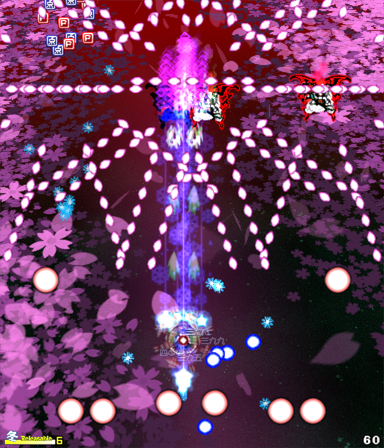

Sparen's Danmakufu ph3 Tutorials Lesson 28 - Implementing Stage Enemies and Familiars
Table of Contents
Part 1: What will be covered in this lesson?
In this lesson, we will discuss the primary gameplay component of Stage Scripts - Stage Enemies. In addition, we will cover boss familiars/enemy familiars in general, as they can provide similar or supplementary roles. For this lesson, it is assumed that you have worked with Plural scripts to the extent by which you understand how bullet trajectories affect gameplay, difficulty, and balancing. In addition, you must have a good understanding of ObjMove and ObjRender functions, as we will be using them heavily.
Now, let's briefly review why Familiars and Stage Enemies are important.
First, it is often preferable to have all bullets originating at the boss or at some location relative to the boss (IE ring around boss/spiral from boss). It may even be preferable to have bullets simply spawn at a static position on the screen or in a formation relative to the playing field/player. But in many cases, attaching a bullet spawner to a static or moving object (familiar) can provide depth to gameplay. From a Touhou perspective, Touhou 8 - Imperishable Night has some of the most complex and varied uses of familiars, and it can be said that the combination of familiars and stage enemies is a major component in the richness of the game's overall gameplay.
By having a number of different familiars all doing the same thing but in different locations, with perhaps different firing angles, we create a pattern that is immediately recognizable for what it is (often because it is symmetric). The bullets are not being spawned at the boss, providing different angles to dodge. There are so many different ways to use familiars that it is beyond the scope of this lesson to describe their varied usage, although we will cover some brief examples.
As for Stage Enemies, stages wouldn't be complete without them. Stage enemies can appear anywhere on the screen, and can fire bullets in any direction, in any frequency, and in ways that require the player to strategize/move in a certain way. While familiars are typically linked to some 'master' enemy, stage enemies can be entirely autonomous or, more often than not, part of a pattern. Of course, level design is beyond the scope of this particular lesson, but how you use stage enemies is key to the success of a stage.
Part 2: How do I implement Familiars?
Let's begin implementation with familiars. For the purposes of this lesson, a Familiar is simply a render object that moves in a predefined pattern either relative to the gameplay area or an enemy such as the boss. Familiars typically spawn bullets from their position. Note that it is possible to use a bullet as a familiar to provide it with a hitbox, but the concept is fundamentally the same.
Let's begin with a typical example. Given an enemy, create a task that spawns a familiar. We will review three different examples - one where familiars rotate around the parent object's position and fire bullets relative to their angle from the parent object, one where familiars are positioned relative to their parent object (similarly to player options), and one where familiars are positioned relative to the screen.
First, rotating familiars. We will want a task that takes an ID (to note which familiar in the ring they are), the total number of familiars in the ring (to control spacing dynamically), the direction to rotate in, and the radius to spawn from the parent object. We'll begin with a basic example, where the familiars fire three bullets each at 120 degree offsets, angled towards the boss.
//This example uses a graphic as the familiar
@MainLoop {
if(count == 0){
ascent(i in 0..6) {CreateShikiA1G(i, 6, 1, 48);}
}
count++;
yield;
}
task CreateShikiA1G(ID, num, dir, rad) {
let objcount = 0; //counter to control firing of bullets and movement
let angleO = ID*360/num; //Initial angle (will be updated)
//obtain object ID
let graphic = GetCurrentScriptDirectory() ~ "./../img/familiar.png"; //Define path
let obj = ObjPrim_Create(OBJ_SPRITE_2D);
ObjPrim_SetTexture(obj, graphic);
ObjSprite2D_SetSourceRect(obj, 0, 0, 64, 64); //use whatever dimensions necessary
ObjSprite2D_SetDestCenter(obj);
ObjRender_SetBlendType(obj, BLEND_ADD_ARGB);
while(ObjEnemy_GetInfo(objEnemy, INFO_LIFE) > 0) { //linked to the parent enemy's life
//ID*360/num sets the angle relative to the other familiars. objcount*dir handles the rotation
angleO = ID*360/num + objcount*dir; //Update angle
ObjRender_SetPosition(obj, ObjMove_GetX(objEnemy) + rad*cos(angleO),
ObjMove_GetY(objEnemy) + rad*sin(angleO), 1);
ObjRender_SetAngleZ(obj, angleO);
if (objcount % 12 == 0) { //control firing rate
let currx = ObjRender_GetX(obj);
let curry = ObjRender_GetY(obj);
ascent(i in 0..3) {
CreateShotA1(currx, curry, 1.5, angleO + 180 + i * 120, 5, 0);
}
}
objcount++;
yield;
}
Obj_Delete(obj);
} //This example uses a bullet as the familiar
@MainLoop {
if(count == 0){
ascent(i in 0..6) {CreateShikiA1B(i, 6, 1, 48);}
}
count++;
yield;
}
task CreateShikiA1B(ID, num, dir, rad) {
let objcount = 0; //counter to control firing of bullets and movement
let angleO = ID*360/num; //Initial angle (will be updated)
//obtain object ID
let obj = CreateShotA1(ObjMove_GetX(objEnemy), ObjMove_GetY(objEnemy), 0, ID*360/num, 29, 0);
//If using a bullet as a familiar, ensure it doesn't get accidentally deleted
ObjShot_SetSpellResist(obj, true);
ObjShot_SetAutoDelete(obj, false);
while(ObjEnemy_GetInfo(objEnemy, INFO_LIFE) > 0) { //linked to the parent enemy's life
//ID*360/num sets the angle relative to the other familiars. objcount*dir handles the rotation
angleO = ID*360/num + objcount*dir; //Update angle
ObjMove_SetPosition(obj, ObjMove_GetX(objEnemy) + rad*cos(angleO),
ObjMove_GetY(objEnemy) + rad*sin(angleO));
ObjMove_SetAngle(obj, angleO);
if (objcount % 12 == 0) { //control firing rate
let currx = ObjMove_GetX(obj);
let curry = ObjMove_GetY(obj);
ascent(i in 0..3) {
CreateShotA1(currx, curry, 1.5, angleO + 180 + i * 120, 5, 0);
}
}
objcount++;
yield;
}
ObjShot_FadeDelete(obj);
}Above we have two examples, one using a graphic for the familiar (using ObjRender functions to position the familiar), and one using a bullet for the familiar (using ObjMove functions to position the familiar). As you can see, most of the work involved is recalculating the angle and position each frame. The parameters we pass in allow for us to configure the familiars - we could do ascent(i in 0..12) {CreateShikiA1B(i, 12, 1, 48);} to double the number of familiars in the single ring or ascent(i in 0..6) {CreateShikiA1B(i, 6, 1, 48); CreateShikiA1B(i, 6, -1, 96);} to have two rings rotating in opposite directions.
Danmakanvas is a Javascript Danmaku simulation made by Sparen. It does NOT work the same way as Danmakufu. Please be advised that the speed at which the simulation runs is therefore not equivalent to the speed that the code would run in Danmakufu.
While rotating familiars are very common, it is also common to have familiars offset from an enemy. Below, an example. We will need to pass a direction parameter once again (to demote which side of the boss the familiar is on so we can reuse the task for both instances) as well as the distance to the parent object.
//This example uses a graphic as the familiar
@MainLoop {
if(count == 0){
CreateShikiA2G(1, 64);
CreateShikiA2G(-1, 64);
}
count++;
yield;
}
task CreateShikiA2G(dir, dist) {
let objcount = 0; //counter to control firing of bullets and movement
//obtain object ID
let graphic = GetCurrentScriptDirectory() ~ "./../img/familiar.png"; //Define path
let obj = ObjPrim_Create(OBJ_SPRITE_2D);
ObjPrim_SetTexture(obj, graphic);
ObjSprite2D_SetSourceRect(obj, 0, 0, 64, 64); //use whatever dimensions necessary
ObjSprite2D_SetDestCenter(obj);
ObjRender_SetBlendType(obj, BLEND_ADD_ARGB);
while(ObjEnemy_GetInfo(objEnemy, INFO_LIFE) > 0) { //linked to the parent enemy's life
ObjRender_SetPosition(obj, ObjMove_GetX(objEnemy) + dir * dist,
ObjMove_GetY(objEnemy), 1);
if (objcount % 120 == 0) { //control firing rate
let currx = ObjRender_GetX(obj);
let curry = ObjRender_GetY(obj);
ascent(i in 0..36) {
CreateShotA1(currx, curry, -2 + i/36*4, 90 + 15*sin(i * 15) + objcount * 0.7 * dir, 5, 0);
CreateShotA1(currx, curry, -2 + i/36*4, 90 - 15*sin(i * 15) + objcount * 0.7 * dir, 5, 0);
}
}
objcount++;
yield;
}
Obj_Delete(obj);
}In this example, we have two side familiars firing a bullet pattern. Each has a different directional multiplier which changes their firing angle such that the firing is symmetrical. See the Danmakanvas example below for an example of what this code might look like.
Danmakanvas is a Javascript Danmaku simulation made by Sparen. It does NOT work the same way as Danmakufu. Please be advised that the speed at which the simulation runs is therefore not equivalent to the speed that the code would run in Danmakufu.
Finally, we will close our discussion of Familiars in Danmakufu with an example of familiars decoupled from the boss. In this example, we will have a pair of familiars be emitted from the boss before flying across the top of the screen back and forth.
@MainLoop {
...
CreateShikiA3B(1); CreateShikiA3B(-1);
...
yield;
}
task CreateShikiA3B(dir){ //This example uses a bullet as the familiar
let obj = CreateShotA1(ObjMove_GetX(objBoss), ObjMove_GetY(objBoss), 0, 0, 132, 0);
ObjShot_SetSpellResist(obj, true);
ObjMove_SetDestAtFrame(obj, GetCenterX() + 180*dir, 16, 60);
wait(60);
let objcount = 0;
while(ObjEnemy_GetInfo(objBoss, INFO_LIFE) > 0){
ObjMove_SetX(obj, GetCenterX() + 180*cos(objcount*2)*dir);
if(objcount % 7 == 0){
ascent(i in 0..4){
CreateShotA1(ObjMove_GetX(obj), ObjMove_GetY(obj), 3 + i/4, 90, 124, 0);
}
}
objcount++;
yield;
}
Obj_Delete(obj);
}Here we have a task that creates a familiar starting at the boss's position. It moves to a position at the top of the screen via ObjMove_SetDestAtFrame(), then begins oscillating about the central axis. Every now and then, it fires bullets directly downwards.
Note that this example does NOT have familiars that delete themselves after a certain amount of time. Rather, these last for the duration of the Single.
Danmakanvas is a Javascript Danmaku simulation made by Sparen. It does NOT work the same way as Danmakufu. Please be advised that the speed at which the simulation runs is therefore not equivalent to the speed that the code would run in Danmakufu.
Part 3: What are Stage Enemies?

Stage enemies are a key component of stages, providing most of the bullets, items, and other gameplay elements present. Just like designing a nonspell or spell for a boss, designing stages is a complex and interesting process. However, a stage is far more complex than a boss Single. Stage enemies, as stated earlier, can appear from anywhere, and can do pretty much anything. Single stage enemies can fire complex patterns. Others can form danmaku in a group. And the interaction between stage enemies, the duration of time they stay on-screen, etc. all matter when designing a good stage.
Here we will only discuss building the stage enemy so it can be created in a Stage script. But keep in mind the role that stage enemies play when designing your stages.
Part 4: How do I implement Stage Enemies?
There are a multitude of ways to implement stage enemies in Danmakufu, especially since there has, for the vast majority of ph3's existence, been no guide on how to do so and scripters have created a variety of methods. For this guide, I will use what I consider to be the most simple approach given what we already know and have reviewed (IE the method I use). If the method I describe here does not work well for you, by all means feel free to use another system or invent your own.
But anyways, stage enemies. Stage enemies, unlike boss enemies, function as standard objects. There is no built-in event system for their life, and at the same time there is no crazy boss scene stuff to deal with. Just simple objects and methods as detailed in Enemy Object Functions (Danmakufu Wiki). Let's go over them.
First we have ObjEnemy_Create(), which, as you may expect, creates a new object and returns its object ID, just like with many of the other Obj****_Create functions we have seen already. The catch here is that we must use OBJ_ENEMY as the parameter to this function to notify Danmakufu that we are creating a non-boss enemy, unlike in a standard Single where we specify that it is a OBJ_ENEMY_BOSS. After this, we must, just like with a Single, ObjEnemy_Regist() on the Object ID to activate the stage enemy.
To initialize the life of a stage enemy, we must use ObjEnemy_SetLife(), which in Singles is rarely used. Of course, we can use ObjEnemy_AddLife() to increment or decrement the value without manually setting it.
ObjEnemy_GetInfo(), ObjEnemy_SetDamageRate(), ObjEnemy_SetIntersectionCircleToShot(), and ObjEnemy_SetIntersectionCircleToPlayer() work the same as with Boss Enemies.
As you can see, we have used most of these functions before. Creating a stage enemy is therefore a simple task on paper. Now, as for putting them into an actual stage...
...The number of different methods for achieving this is likely close to the number of scripters who have ever made stage enemies. I will propose one method, and of course you may choose to use another one or your own.
The style we will use in this guide consists of separate files for enemy scripts, say, StageEnemy1.txt or something similar. This will be #included into a stage like so:
#include "./stgenemy/StageEnemy1.txt"
#include "./stgenemy/StageEnemy2.txt"
#include "./stgenemy/StageEnemy3.txt"
#include "./stgenemy/StageEnemy4.txt"
#include "./stgenemy/StageEnemy5.txt"
#include "./stgenemy/StageEnemy6.txt"In these #include files, we will have a single task each. Note that for simplicity, I will be excluding some of the more interesting options.
task CreateStageEnemy1(x, y, speedE, angleE) {
let count = 0; //Counter
let Xmin = -32;
let Xmax = GetStgFrameWidth + 32;
let Ymin = -32;
let Ymax = GetStgFrameHeight + 32;
let objEnemy;
TInitialize;
task TInitialize {
objEnemy = ObjEnemy_Create(OBJ_ENEMY);
ObjEnemy_Regist(objEnemy);
ObjEnemy_SetLife(objEnemy, 48);
SetDamageRateAtFrameEnm(objEnemy, 80, 50, 30);
ObjMove_SetPosition(objEnemy, x, y);
ObjMove_SetAngle(objEnemy, angleE);
ObjMove_SetSpeed(objEnemy, speedE);
TDrawLoop(objEnemy);
TMainLoop;
TFinalize;
}
task TMainLoop {
while(ObjEnemy_GetInfo(objEnemy, INFO_LIFE) > 0) {
ObjEnemy_SetIntersectionCircleToShot(objEnemy, ObjMove_GetX(objEnemy), ObjMove_GetY(objEnemy), 32);
ObjEnemy_SetIntersectionCircleToPlayer(objEnemy, ObjMove_GetX(objEnemy), ObjMove_GetY(objEnemy), 8);
if (count == 30) {bulletA;}
if (GetEnemyX(objEnemy) < Xmin || GetEnemyX(objEnemy) > Xmax || GetEnemyY(objEnemy) < Ymin || GetEnemyY(objEnemy) > Ymax) {
ObjEnemy_SetLife(objEnemy, -1000);
}
count++;
yield;
}
}
task bulletA{
while(ObjEnemy_GetInfo(objEnemy, INFO_LIFE) > 0) {
//Do stuff
yield;
}
}
task TFinalize {
while(ObjEnemy_GetInfo(objEnemy, INFO_LIFE) > 0) {yield;}
Obj_Delete(objEnemy);
}
}Here we have one big task CreateStageEnemy1 that creates a new stage enemy, places it at (x,y) with speed speedE and angle angleE, and essentially mimics the structure of a Single. We have an initialization task that assigns damage rate and position, then calls other loops. We have a main loop that handles the hitbox, firing bullets, and checking if the enemy is out of bounds. We have a finalize task that deletes the enemy.
Of note is the X/Y min/max setup - when the stage enemy leaves the screen you typically want to delete it. Additionally, I have excluded the implementation of the Draw Loop for this enemy as it is dependent on your own spritesheet setup.
Now, as for creating the enemy in-stage? Well, since we've #included the file, we can just CreateStageEnemy1(-16, 128, 2, 0); or whatever else we want to do!
There any many variations on stage enemies - having them slow down, fire, then start back up, for example. Or having them fade into existence, fade out of existence, etc. It's up to you as the scripter to implement what you feel is best for the stage you are designing.
Part 5: What are things to avoid when implementing Stage Enemies?
To close this lesson, we will discuss some things that you should NOT do.
In regards to the method by which you create stage enemies, do NOT use Scripts for enemies. With a Boss, you have each Single in a script. However, if you have 20-30 stage enemies on-screen at the same time and are using scripts, that means you're running 20-30 @Events, 20-30 @MainLoops, etc. There is a lot of overhead associated with starting up and running a script, and the hit to the game's FPS will be noticeable.
Quiz: Stage Enemies in Danmakufu
1) Tewi is setting up a stage enemy with the following code, but it never appears. Why is it not appearing?
task CreateStageEnemyA(x, y, speedE, angleE) {
let count = 0; //Counter
let Xmin = -32;
let Xmax = GetStgFrameWidth + 32;
let Ymin = -32;
let Ymax = GetStgFrameHeight + 32;
let objEnemy;
TInitialize;
task TInitialize {
objEnemy = ObjEnemy_Create(OBJ_ENEMY);
ObjEnemy_Regist(objEnemy);
SetDamageRateAtFrameEnm(objEnemy, 80, 50, 30);
ObjMove_SetPosition(objEnemy, x, y);
ObjMove_SetAngle(objEnemy, angleE);
ObjMove_SetSpeed(objEnemy, speedE);
TDrawLoop(objEnemy);
TMainLoop;
TFinalize;
}
task TMainLoop {
while(ObjEnemy_GetInfo(objEnemy, INFO_LIFE) > 0) {
ObjEnemy_SetIntersectionCircleToShot(objEnemy, ObjMove_GetX(objEnemy), ObjMove_GetY(objEnemy), 32);
ObjEnemy_SetIntersectionCircleToPlayer(objEnemy, ObjMove_GetX(objEnemy), ObjMove_GetY(objEnemy), 8);
if (GetEnemyX(objEnemy) < Xmin || GetEnemyX(objEnemy) > Xmax || GetEnemyY(objEnemy) < Ymin || GetEnemyY(objEnemy) > Ymax) {
ObjEnemy_SetLife(objEnemy, -1000);
}
count++;
yield;
}
}
task TFinalize {
while(ObjEnemy_GetInfo(objEnemy, INFO_LIFE) > 0) {yield;}
Obj_Delete(objEnemy);
}
}Summary
- Familiars can be used to create danmaku at locations away from but related to the position of the boss or playing field
- Familiars can be implemented using either Render Objects or Shot Objects
- Stage Enemies are the main gameplay component of a Stage and can be used in a variety of different manners
- Stage Enemies can be implemented using Enemy Objects and standard functions/tasks
- Stage Enemies should not be implemented using Scripts per enemy instance
Sources and External Resources
N/A